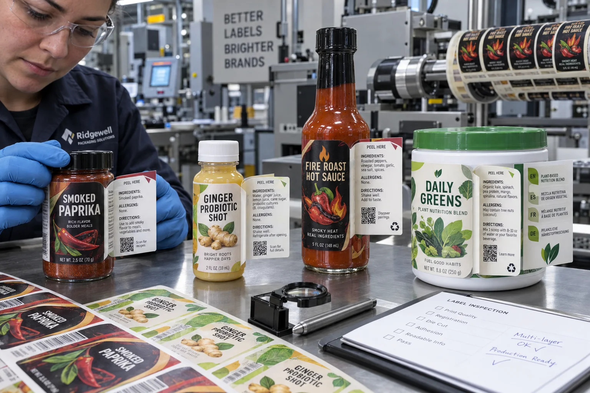

Short answer
Peel-and-reveal labels add printable panels to a small package by combining a base label, hinged top layer and controlled opening or reseal area. They solve space problems when the structure is designed around the package, applicator and information hierarchy.
The wrong reason to buy one is, “we ran out of room after the design was finished.” By then the bottle curve, barcode and front branding may already consume the only stable label panel. Extended content works best when it enters the dieline discussion early.
Choose the right construction
| Format | Useful for | Main trade-off |
|---|---|---|
| Two-layer peel and reveal | Short ingredients, directions or second language | Limited inner area |
| Three-layer label | More languages or regulated copy | Thickness and converting complexity |
| Leaflet/booklet label | Detailed instructions and many pages | Highest profile and dispensing demands |
| QR plus landing page | Optional, changing or expanded content | Not a replacement for required on-pack copy |
Avery Dennison describes multi-layer labels as hinged constructions with two or three printed layers, while booklet formats can hold a folded insert between a base and resealable top. More pages are possible, but every layer adds stiffness and another production relationship to control.
A composite small-bottle project
This is a composite planning example. A 60 ml wellness shot needs English, French and Spanish directions, ingredients, allergen copy, a barcode and a strong front panel. The designer reduces the inner copy to six-point type to avoid changing the bottle.
I once treated that as an artwork problem and asked the designer to tighten leading again. It made the PDF fit and the package fail. A two-layer label gave the copy enough room, but then the first prototype placed the open tab against the bottle seam. The final answer required both a new construction and a new application orientation.
The outside panel still has work to do
Do not turn the top panel into a door with no shelf appeal. Product name, variant, net contents and essential identity should remain legible when the label is closed. A small “PEEL HERE” cue should be easy to find without competing with the brand.
- Keep the hinge away from tight compound curves.
- Use a non-tack lift tab large enough for ordinary fingers.
- Keep critical text away from die cuts and fold lines.
- Plan inner copy in the final printed size, not at enlarged screen zoom.
- Define whether the top panel must reseal after every reading.
Thickness changes application behavior
Multi-layer labels can be stiffer than a standard pressure-sensitive label. On a small-radius bottle, that stiffness can increase edge lift. On an automatic applicator, a thick leading edge may pre-dispense or bridge the peel plate. The roll may also contain fewer labels because its outside diameter grows faster.
| Production detail | What to confirm |
|---|---|
| Total caliper | Package curve and applicator tolerance |
| Open tab position | Consumer access and label feed direction |
| Release and reseal | Clean opening without tearing or adhesive transfer |
| Roll build | Core, outside diameter, gap and winding |
| Inspection | Layer registration and correct copy sequence |
Factory-side view
More printable area can create less readable packaging
Once an inner panel exists, every department discovers one more paragraph it wants to add.
The construction buys space, not permission to stop editing. A clear hierarchy still matters inside the label.
When another format wins
A larger carton may be better if the product already needs protection and instructions. A neck tag can suit a short promotion. A QR code can carry optional videos or changing recipes. A redesigned bottle may offer a wider panel. Peel-and-reveal wins when on-pack information must travel with a compact product and the added converting complexity is justified.
Proof and quote checklist
- Supply the actual package and usable label panel.
- Separate mandatory visible copy from inner-panel content.
- Confirm languages, reading order and final minimum type size.
- Define layer count, hinge, tab and reseal requirement.
- Provide applicator model, core, roll direction and maximum diameter.
- Approve a constructed physical sample, not only flat artwork.
- Test opening, reading, resealing and machine dispensing.
See Avery Dennison's official multi-layer label overview for construction examples. For fitting the base label, use our Custom Label Size Guide.
Frequently asked questions
What is a peel-and-reveal label?
It is a multi-layer pressure-sensitive label with a top panel that opens to reveal printed information underneath. Constructions may have two or more panels and may reseal after reading.
What information can go inside a multi-layer label?
Ingredients, directions, warnings, multilingual copy, promotional content and QR instructions are common. Mandatory information placement should be reviewed for the target market.
Can peel-and-reveal labels run on an automatic applicator?
Yes, but total thickness, stiffness, dispensing behavior, label gap, roll direction and pre-dispensing risk should be tested on the actual machine.
Are booklet labels the same as peel-and-reveal labels?
They belong to the same extended-content family, but booklet labels may contain a folded leaflet between a base and resealable top layer, allowing more pages and greater thickness.
Related label guides
- Food-Contact Printing Inks for Labels: Buyer Guide
- Labels for Compostable Packaging: Material Guide
- Scuff-Resistant Labels: Rub Testing and Finishes
Review the complete label construction
Send package photos, material details, finished label size, quantity by artwork, storage conditions and application method. We can review fit, material and production details before preparing a quote and digital proof.